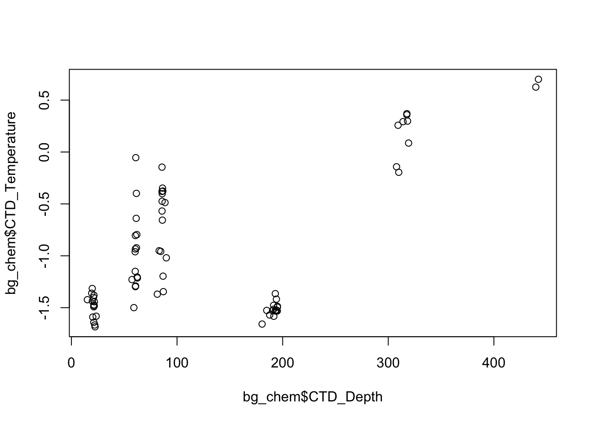

7 Introduction to R and RMarkdown
7.1 Learning Objectives
In this lesson we will:
- get oriented to the RStudio interface
- work with R in the console
- explore RMarkdown
- be introduced to built-in R functions
- learn to use the help pages
7.2 Introduction and Motivation
There is a vibrant community out there that is collectively developing increasingly easy to use and powerful open source programming tools. The changing landscape of programming is making learning how to code easier than it ever has been. Incorporating programming into analysis workflows not only makes science more efficient, but also more computationally reproducible. In this course, we will use the programming language R, and the accompanying integrated development environment (IDE) RStudio. R is a great language to learn for data-oriented programming because it is widely adopted, user-friendly, and (most importantly) open source!
So what is the difference between R and RStudio? Here is an analogy to start us off. If you were a chef, R is a knife. You have food to prepare, and the knife is one of the tools that you’ll use to accomplish your task.
And if R were a knife, RStudio is the kitchen. RStudio provides a place to do your work! Other tools, communication, community, it makes your life as a chef easier. RStudio makes your life as a researcher easier by bringing together other tools you need to do your work efficiently - like a file browser, data viewer, help pages, terminal, community, support, the list goes on. So it’s not just the infrastructure (the user interface or IDE), although it is a great way to learn and interact with your variables, files, and interact directly with git. It’s also data science philosophy, R packages, community, and more. So although you can prepare food without a kitchen and we could learn R without RStudio, that’s not what we’re going to do. We are going to take advantage of the great RStudio support, and learn R and RStudio together.
Something else to start us off is to mention that you are learning a new language here. It’s an ongoing process, it takes time, you’ll make mistakes, it can be frustrating, but it will be overwhelmingly awesome in the long run. We all speak at least one language; it’s a similar process, really. And no matter how fluent you are, you’ll always be learning, you’ll be trying things in new contexts, learning words that mean the same as others, etc, just like everybody else. And just like any form of communication, there will be miscommunications that can be frustrating, but hands down we are all better off because of it.
While language is a familiar concept, programming languages are in a different context from spoken languages, but you will get to know this context with time. For example: you have a concept that there is a first meal of the day, and there is a name for that: in English it’s “breakfast”. So if you’re learning Spanish, you could expect there is a word for this concept of a first meal. (And you’d be right: ‘desayuno’). We will get you to expect that programming languages also have words (called functions in R) for concepts as well. You’ll soon expect that there is a way to order values numerically. Or alphabetically. Or search for patterns in text. Or calculate the median. Or reorganize columns to rows. Or subset exactly what you want. We will get you increase your expectations and learn to ask and find what you’re looking for.
7.2.1 Resources
This lesson is a combination of excellent lessons by others. Huge thanks to Julie Lowndes for writing most of this content and letting us build on her material, which in turn was built on Jenny Bryan’s materials. I definitely recommend reading through the original lessons and using them as reference:
Julie Lowndes’ Data Science Training for the Ocean Health Index
Jenny Bryan’s lectures from STAT545 at UBC
RStudio has great resources as well:
Finally, Hadley Wickham’s book R for Data Science is a great resource to get more in depth.
Other resources:
7.3 R at the console
Launch RStudio/R.

Notice the default panes:
- Console (entire left)
- Environment/History (tabbed in upper right)
- Files/Plots/Packages/Help (tabbed in lower right)
FYI: you can change the default location of the panes, among many other things: Customizing RStudio.
An important first question: where are we?
If you’ve just opened RStudio for the first time, you’ll be in your Home directory. This is noted by the ~/ at the top of the console. You can see too that the Files pane in the lower right shows what is in the Home directory where you are. You can navigate around within that Files pane and explore, but note that you won’t change where you are: even as you click through you’ll still be Home: ~/.

OK let’s go into the Console, where we interact with the live R process.
We use R to calculate things for us, so let’s do some simple math.
3*4## [1] 12You can assign the value of that mathematic operation to a variable, or object, in R. You do this using the assignment operator, <-.
Make an assignment and then inspect the object you just created.
x <- 3 * 4
x## [1] 12In my head I hear, e.g., “x gets 12”.
All R statements where you create objects – “assignments” – have this form: objectName <- value.
I’ll write it in the console with a hash #, which is the way R comments so it won’t be evaluated.
## objectName <- value
## This is also how you write notes in your code to explain what you are doing.Object names cannot start with a digit and cannot contain certain other characters such as a comma or a space. You will be wise to adopt a convention for demarcating words in names.
# i_use_snake_case
# other.people.use.periods
# evenOthersUseCamelCaseMake an assignment
this_is_a_really_long_name <- 2.5To inspect this variable, instead of typing it, we can press the up arrow key and call your command history, with the most recent commands first. Let’s do that, and then delete the assignment:
this_is_a_really_long_name## [1] 2.5Another way to inspect this variable is to begin typing this_…and RStudio will automagically have suggested completions for you that you can select by hitting the tab key, then press return.
One more:
science_rocks <- "yes it does!"You can see that we can assign an object to be a word, not a number. In R, this is called a “string”, and R knows it’s a word and not a number because it has quotes " ". You can work with strings in your data in R pretty easily, thanks to the stringr and tidytext packages. We won’t talk about strings very much specifically, but know that R can handle text, and it can work with text and numbers together.
Strings and numbers lead us to an important concept in programming: that there are different “classes” or types of objects. An object is a variable, function, data structure, or method that you have written to your environment. You can see what objects you have loaded by looking in the “environment” pane in RStudio. The operations you can do with an object will depend on what type of object it is. This makes sense! Just like you wouldn’t do certain things with your car (like use it to eat soup), you won’t do certain operations with character objects (strings), for example.
Try running the following line in your console:
"Hello world!" * 3What happened? Why?
You may have noticed that when assigning a value to an object, R does not print anything. You can force R to print the value by using parentheses or by typing the object name:
weight_kg <- 55 # doesn't print anything
(weight_kg <- 55) # but putting parenthesis around the call prints the value of `weight_kg`## [1] 55weight_kg # and so does typing the name of the object## [1] 55Now that R has weight_kg in memory, we can do arithmetic with it. For instance, we may want to convert this weight into pounds (weight in pounds is 2.2 times the weight in kg):
2.2 * weight_kg## [1] 121We can also change a variable’s value by assigning it a new one:
weight_kg <- 57.5
2.2 * weight_kg## [1] 126.5This means that assigning a value to one variable does not change the values of other variables. For example, let’s store the animal’s weight in pounds in a new variable, weight_lb:
weight_lb <- 2.2 * weight_kgand then change weight_kg to 100.
weight_kg <- 100What do you think is the current content of the object weight_lb? 126.5 or 220? Why?
You can also store more than one value in a single object. Storing a series of weights in a single object is a convenient way to perform the same operation on multiple values at the same time. One way to create such an object is the function c(), which stands for combine or concatenate.
Here we will create a vector of weights in kilograms, and convert them to pounds, saving the weight in pounds as a new object.
weight_kg <- c(55, 25, 12)
weight_kg## [1] 55 25 12weight_lb <- weight_kg * 2.2
weight_lb## [1] 121.0 55.0 26.47.3.1 Error messages are your friends
Implicit contract with the computer/scripting language: Computer will do tedious computation for you. In return, you will be completely precise in your instructions. Typos matter. Case matters. Pay attention to how you type.
Remember that this is a language, not unsimilar to English! There are times you aren’t understood – it’s going to happen. There are different ways this can happen. Sometimes you’ll get an error. This is like someone saying ‘What?’ or ‘Pardon’? Error messages can also be more useful, like when they say ‘I didn’t understand this specific part of what you said, I was expecting something else’. That is a great type of error message. Error messages are your friend. Google them (copy-and-paste!) to figure out what they mean.

And also know that there are errors that can creep in more subtly, without an error message right away, when you are giving information that is understood, but not in the way you meant. Like if I’m telling a story about tables and you’re picturing where you eat breakfast and I’m talking about data. This can leave me thinking I’ve gotten something across that the listener (or R) interpreted very differently. And as I continue telling my story you get more and more confused… So write clean code and check your work as you go to minimize these circumstances!
7.3.2 Logical operators and expressions
A moment about logical operators and expressions. We can ask questions about the objects we just made.
==means ‘is equal to’!=means ‘is not equal to’<means ` is less than’>means ` is greater than’<=means ` is less than or equal to’>=means ` is greater than or equal to’
weight_kg == 2## [1] FALSE FALSE FALSEweight_kg >= 30## [1] TRUE FALSE FALSEweight_kg != 5## [1] TRUE TRUE TRUEShortcuts You will make lots of assignments and the operator
<-is a pain to type. Don’t be lazy and use=, although it would work, because it will just sow confusion later. Instead, utilize RStudio’s keyboard shortcut: Alt + - (the minus sign). Notice that RStudio automagically surrounds<-with spaces, which demonstrates a useful code formatting practice. Code is miserable to read on a good day. Give your eyes a break and use spaces. RStudio offers many handy keyboard shortcuts. Also, Alt+Shift+K brings up a keyboard shortcut reference card.
7.3.3 Clearing the environment
Now look at the objects in your environment (workspace) – in the upper right pane. The workspace is where user-defined objects accumulate.

You can also get a listing of these objects with a few different R commands:
objects()## [1] "ak_map" "ak_map_3857"
## [3] "bbox" "ggmap_bbox_to_3857"
## [5] "science_rocks" "this_is_a_really_long_name"
## [7] "weight_kg" "weight_lb"
## [9] "x"ls()## [1] "ak_map" "ak_map_3857"
## [3] "bbox" "ggmap_bbox_to_3857"
## [5] "science_rocks" "this_is_a_really_long_name"
## [7] "weight_kg" "weight_lb"
## [9] "x"If you want to remove the object named weight_kg, you can do this:
rm(weight_kg)To remove everything:
rm(list = ls())or click the broom in RStudio’s Environment pane.
7.4 RMarkdown
Now that we know some basic R syntax, let’s learn a little about RMarkdown. You will drive yourself crazy (and fail to generate a reproducible workflow!) running code directly in the console. RMarkdown is really key for collaborative research, so we’re going to get started with it early and then use it for the rest of the course.
An RMarkdown file will allow us to weave markdown text with chunks of R code to be evaluated and output content like tables and plots.
File -> New File -> RMarkdown… -> Document of output format HTML, OK.

You can give it a Title like “My Project”. Then click OK.
OK, first off: by opening a file, we are seeing the 4th pane of the RStudio console, which is essentially a text editor. This lets us organize our files within RStudio instead of having a bunch of different windows open.
Let’s have a look at this file — it’s not blank; there is some initial text is already provided for you. Notice a few things about it:
- There are white and grey sections. R code is in grey sections, and other text is in white.

Let’s go ahead and “Knit HTML” by clicking the blue yarn at the top of the RMarkdown file. When you first click this button, RStudio will prompt you to save this file. Create a new folder for it somewhere that you will be able to find again (such as your Desktop or Documents), and name that folder something you’ll remember (like arctic_training_files).
What do you notice between the two?
Notice how the grey R code chunks are surrounded by 3 backticks and {r LABEL}. These are evaluated and return the output text in the case of summary(cars) and the output plot in the case of plot(pressure).
Notice how the code plot(pressure) is not shown in the HTML output because of the R code chunk option echo=FALSE.
More details…
This RMarkdown file has 2 different languages within it: R and Markdown.
We don’t know that much R yet, but you can see that we are taking a summary of some data called ‘cars’, and then plotting. There’s a lot more to learn about R, and we’ll get into it for the next few days.
The second language is Markdown. This is a formatting language for plain text, and there are only about 15 rules to know.
Notice the syntax for:
- headers get rendered at multiple levels:
#,## - bold:
**word**
There are some good cheatsheets to get you started, and here is one built into RStudio: Go to Help > Markdown Quick Reference
Important: note that the hashtag # is used differently in Markdown and in R:
- in R, a hashtag indicates a comment that will not be evaluated. You can use as many as you want:
#is equivalent to######. It’s just a matter of style. - in Markdown, a hashtag indicates a level of a header. And the number you use matters:
#is a “level one header”, meaning the biggest font and the top of the hierarchy.###is a level three header, and will show up nested below the#and##headers.
Learn more: http://rmarkdown.rstudio.com/
7.4.1 Your Turn
- In Markdown, Write some italic text, and make a numbered list. And add a few subheaders. Use the Markdown Quick Reference (in the menu bar: Help > Markdown Quick Reference).
- Reknit your html file.
7.4.2 Code chunks
OK. Now let’s practice with some of those commands.
Create a new chunk in your RMarkdown first in one of these ways:
- click “Insert > R” at the top of the editor pane
- type by hand ```{r} ```
- if you haven’t deleted a chunk that came with the new file, edit that one
Now, let’s write some R code.
x <- 4*3
xNow, hitting return does not execute this command; remember, it’s just a text file. To execute it, we need to get what we typed in the the R chunk (the grey R code) down into the console. How do we do it? There are several ways (let’s do each of them):
- copy-paste this line into the console.
- select the line (or simply put the cursor there), and click ‘Run’. This is available from
- the bar above the file (green arrow)
- the menu bar: Code > Run Selected Line(s)
- keyboard shortcut: command-return
- click the green arrow at the right of the code chunk
7.4.3 Your turn
Add a few more commands to your file. Execute them by trying the three ways above. Then, save your R Markdown file.
7.5 R functions, help pages
So far we’ve learned some of the basic syntax and concepts of R programming, how to navigate RStudio, and RMarkdown, but we haven’t done any complicated or interesting programming processes yet. This is where functions come in!
A function is a way to group a set of commands together to undertake a task in a reusable way. When a function is executed, it produces a return value. We often say that we are “calling” a function when it is executed. Functions can be user defined and saved to an object using the assignment operator, so you can write whatever functions you need, but R also has a mind-blowing collection of built-in functions ready to use. To start, we will be using some built in R functions.
All functions are called using the same syntax: function name with parentheses around what the function needs in order to do what it was built to do. The pieces of information that the function needs to do its job are called arguments. So the syntax will look something like: result_value <- function_name(argument1 = value1, argument2 = value2, ...).
7.5.1 A simple example
To take a very simple example, let’s look at the mean() function. As you might expect, this is a function that will take the mean of a set of numbers. Very convenient!
Let’s create our vector of weights again:
weight_kg <- c(55, 25, 12)and use the mean function to calculate the mean weight.
mean(weight_kg)## [1] 30.666677.5.2 Getting help
What if you know the name of the function that you want to use, but don’t know exactly how to use it? Thankfully RStudio provides an easy way to access the help documentation for functions.
To access the help page for mean, enter the following into your console:
?meanThe help pane will show up in the lower right hand corner of your RStudio.
The help page is broken down into sections:
- Description: An extended description of what the function does.
- Usage: The arguments of the function(s) and their default values.
- Arguments: An explanation of the data each argument is expecting.
- Details: Any important details to be aware of.
- Value: The data the function returns.
- See Also: Any related functions you might find useful.
- Examples: Some examples for how to use the function.
7.5.3 Your turn
Exercise: Talk to your neighbor(s) and look up the help file for a function that you know or expect to exist. Here are some ideas:
?getwd(),?plot(),min(),max(),?log()).
And there’s also help for when you only sort of remember the function name: double-questionmark:
??install Not all functions have (or require) arguments:
date()## [1] "Wed Feb 20 10:21:50 2019"7.5.4 Use a function to read a file into R
So far we have learned how to assign values to objects in R, and what a function is, but we haven’t quite put it all together yet with real data yet. To do this, we will introduce the function read.csv, which will be in the first lines of many of your future scripts. It does exactly what it says, it reads in a csv file to R.
Since this is our irst time using this function, first access the help page for read.csv. This has a lot of information in it, as this function has a lot of arguments, and the first one is especially important - we have to tell it what file to look for. Let’s get a file!
7.5.4.1 Download a file from the Arctic Data Center
Navigate to this dataset by Craig Tweedie that is published on the Arctic Data Center. Craig Tweedie. 2009. North Pole Environmental Observatory Bottle Chemistry. Arctic Data Center. doi:10.18739/A25T3FZ8X., and download the first csv file called “BGchem2008data.csv”
Move this file from your Downloads folder into a place you can more easily find it. I recommend creating a folder called data in your previously-created directory arctic_training_files, and putting the file there.
Now we have to tell read.csv how to find the file. We do this using the file argument which you can see in usage section in the help page. In RMarkdown, you can either use absolute paths (which will start with your home directory ~/) or paths relative to the location of the RMarkdown. RStudio and RMarkdown have some great autocomplete capabilities when using relative paths, so we will go that route. Assuming you have moved your file to a folder within arctic_training_files called data, your read.csv call will look like this:
bg_chem <- read.csv("data/BGchem2008data.csv")You should now have an object of the class data.frame in your environment called bg_chem. Check your environment pane to ensure this is true.
Note that in the help page there are a whole bunch of arguments that we didn’t use in the call above. Some of the arguments in function calls are optional, and some are required. Optional arguments will be shown in the usage section with a name = value pair, with the default value shown. If you do not specify a name = value pair for that argument in your function call, the function will assume the default value (example: header = TRUE for read.csv). Required arguments will only show the name of the argument, without a value. Note that the only required argument for read.csv is file.
You can always specify arguments in name = value form. But if you do not, R attempts to resolve by position. So above, it is assumed that we want file = "data/BGchem2008data.csv", since file is the first argument. If we wanted to add another argument, say stringsAsFactors, we need to specify it explicitly using the name = value pair, since the second argument is header. For functions I call often, I use this resolve by position for the first argument or maybe the first two. After that, I always use name = value.
Many R users (including myself) will override the default stringsAsFactors argument using the following call:
bg_chem <- read.csv("data/BGchem2008data.csv", stringsAsFactors = FALSE)7.6 Using data.frames
A data.frame is a two dimensional data structure in R that mimics spreadsheet behavior. It is a collection of rows and columns of data, where each column has a name and represents a variable, and each row represents a measurement of that variable. When we ran read.csv, the object bg_chem that we created is a data.frame. There are a a bunch of ways R and RStudio help you explore data frames. Here are a few, give them each a try:
- click on the word
bg_chemin the environment pane - click on the arrow next to
bg_chemin the environment pane - execute
head(bg_chem)in the console - execute
View(bg_chem)in the console
Usually we will want to run functions on individual columns in a data.frame. To call a specific column, we use the list subset operator $. Say you want to look at the first few rows of the Date column only. This would do the trick:
head(bg_chem$Date)## [1] "2008-03-21" "2008-03-21" "2008-03-21" "2008-03-21" "2008-03-21"
## [6] "2008-03-22"How about calculating the mean temperature of all the CTD samples?
mean(bg_chem$CTD_Temperature)## [1] -0.9646915Or, if we want to save this to a variable to use later:
mean_temp <- mean(bg_chem$CTD_Temperature)You can also create basic plots using the list subset operator.
plot(bg_chem$CTD_Depth, bg_chem$CTD_Temperature)
There are many more advancted tools and functions in R that will enable you to make better plots using cleaner syntax, we will cover some of these later in the course.
7.6.1 Your Turn
Exercise: Spend a few minutes exploring this dataset. Try out different functions on columns using the list subset operator and experiment with different plots.
7.7 Troubleshooting
7.7.1 My RMarkdown won’t knit to PDF
If you get an error when trying to knit to PDF that says your computer doesn’t have a LaTeX installation, one of two things is likely happening:
- Your computer doesn’t have LaTeX installed
- You have an installation of LaTeX but RStudio cannot find it (it is not on the path)
If you already use LaTeX (like to write papers), you fall in the second category. Solving this requires directing RStudio to your installation - and isn’t covered here.
If you fall in the first category - you are sure you don’t have LaTeX installed - can use the R package tinytex to easily get an installation recognized by RStudio, as long as you have administrative rights to your computer.
To install tinytex run:
install.packages("tinytex")
tinytex::install_tinytex()If you get an error that looks like destination /usr/local/bin not writable, you need to give yourself permission to write to this directory (again, only possible if you have administrative rights). To do this, run this command in the terminal:
sudo chown -R `whoami`:admin /usr/local/binand then try the above install instructions again. More information about tinytex can be found here
7.7.2 I just entered a command and nothing is happening
It may be because you didn’t complete a command: is there a little + in your console? R is saying that it is waiting for you to finish. In the example below, I need to close that parenthesis.
> x <- seq(1, 10
+ You can either just type the closing parentheses here and push return, or push the esc button twice.
7.7.3 R says my object is not found
New users will frequently see errors that look like this: Error in mean(myobject) : object 'myobject' not found
This means that you do not have an object called myobject saved in your environment. The common reasons for this are:
- typeo: make sure your object name is spelled exactly like what shows up in the console. Remember R is case sensitive.
- not writing to a variable: note that the object is only saved in the environment if you use the assignment operator, eg:
myobject <- read.csv(...) - not executing the line in your RMarkdown: remember that writing a line of code in RMarkdown is not the same as writing in the console, you have to execute the line of code using command + enter, running the chunk, or one of the other ways outlined in the RMarkdown section of this training
7.8 Literate Analysis
RMarkdown is an excellent way to generate literate analysis, and a reproducible workflow. Here is an example of a real analysis workflow written using RMarkdown.